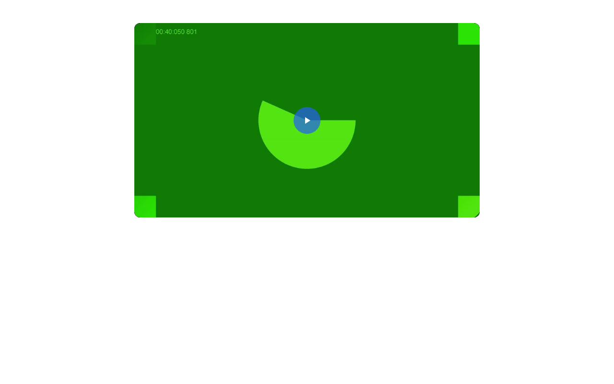
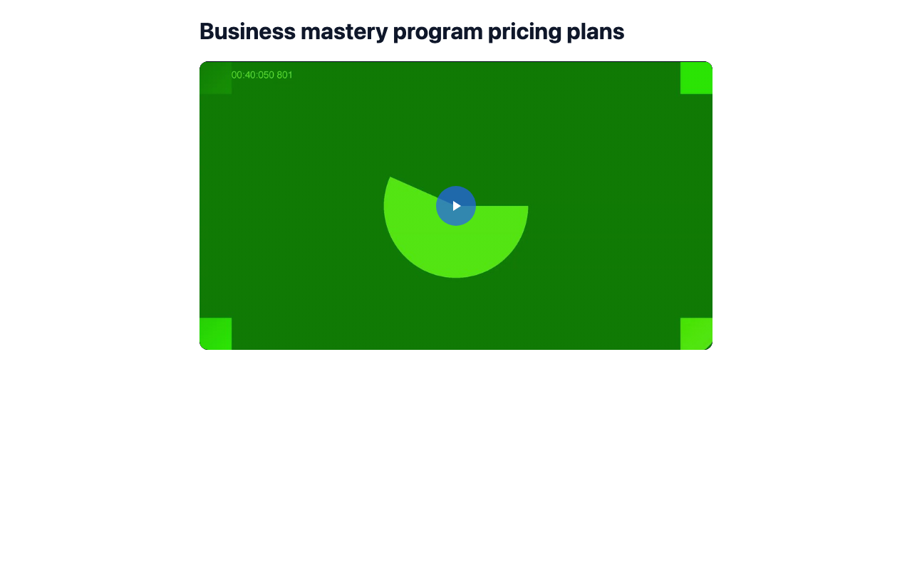
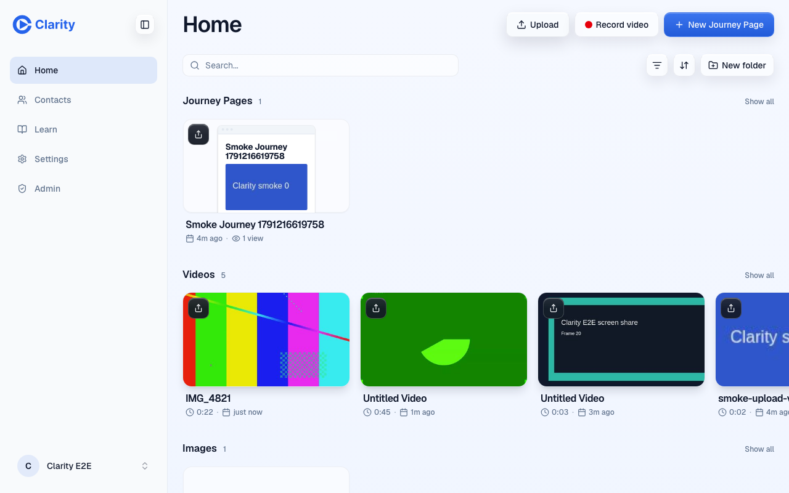
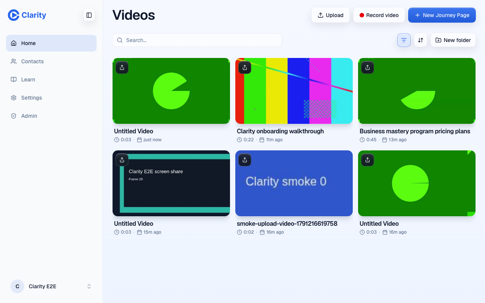
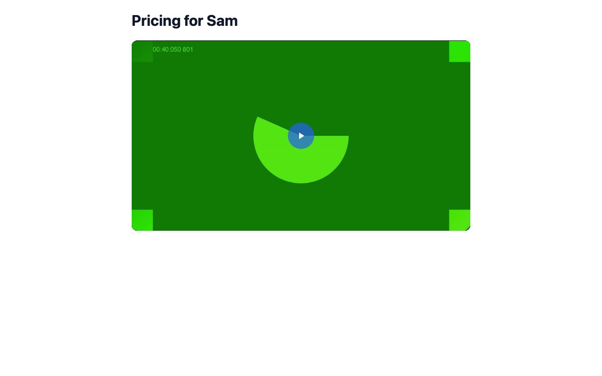
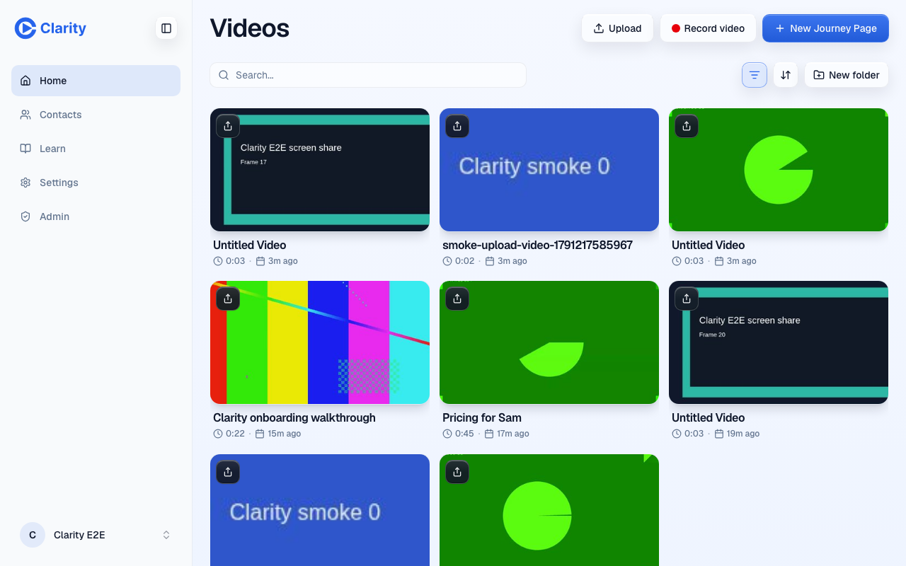

Auto-title, PR #1014 preview
Recorded on the PR preview (pr-1014) on 2026-10-05 with a synthetic voice and Chrome's fake camera. No customer content. Previews have no OpenAI key, so each title came from gpt-6.1-sol answering the production title prompt through Codex, passed in through a preview-only tick for one take. Everything after that ran on the preview's real code, database and Mux. This PR adds no trim: the video below still plays the full 44.5 s recording.
1. A recording gets a title, and its share page follows
The take finished as "Untitled Video", so its share page had no headline. After one pass the page shows the new title on the same link, with no page write.


2. A Library upload gets a title

IMG_4821.mp4, so the card reads IMG_4821. The recording beside it reads "Untitled Video".
3. A user rename wins
I renamed the recording to "Pricing for Sam" through the real Library rename. The share page showed the new name within 20 seconds, inside the edge cache's 60-second limit. Then I forced the automatic pass to run again with the model's title. It saw that the user owns the title, skipped the model, and changed nothing. The test suite covers the other orders: a rename before the pass, during the model call, and after it with a stale read.

